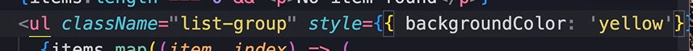

HOME
Inline Styles
Not Recomended
Inline styles make code hard to maintain and read.
They should be reserved for extreamly special cases.
You may see them somewhere someday so you need to atleast know what
they are.
They are similar to the way html inline styles work.
Use the style prop, and inside braces use another set of braces, which
is an object, and write the styles here.
